CHESS AI · 離線操作指南 · 2026-10-24
從教師標記到共同開局對戰
用同一份資料比較五個評分項群組，分開查看加入群組、學習權重、群組搭配及實際對戰的效果。
本頁及 ml-guide/ 一起保存即可離線閱讀，無外部字型、腳本或圖片依賴。畫面由交付版應用程式的真實 pygame UI 事件與背景執行產生；編號是 HTML 註記，原始截圖未重繪。驗收使用 SDL dummy 顯示表面，來源、Stockfish、求解、深度三搜尋與保存均實際執行。版本基礎 595c010，含 Windows 保存修正 4f2feff 及相同版本的選取標記顯示修正。
想調什麼 → 使用哪個控制項
| 目的 | 控制項／位置 | 方向與代價 | 結果位置 |
|---|---|---|---|
| 換來源、重現抽樣 | 學習實驗：來源、路徑、種子、建立新實驗 | 來源越大，讀取與標記越久；換來源／種子另建，不覆寫舊結果 | 實際盤數、去重與階段分布、局面完整歷史 |
| 選教師成本 | 教師先導：50,000／200,000 節點 | 更多節點通常更耗時；先看差值與有效量，這不是對戰深度 | 先導耗時、篩除量、教師版本與凍結選擇 |
| 改局面靜態評分 | 五個單群組／權重頁 | 選既有特徵，學中局與殘局係數；固定棋子價值，群組不是搜尋演算法 | 原始→學習權重、驗證／測試 MAE 與階段 |
| 控制調整幅度 | 進階條件：弱／中／強偏離懲罰 | 三候選由驗證組選定，不能用測試結果反覆挑參數 | 規則、候選驗證誤差與凍結結果 |
| 檢查群組搭配 | 組合：勾群組、直接組合／聯合訓練／固定四設定 | 直接組合保留單組權重；聯合重新擬合、需額外時間；不自動展開所有組合 | 實際開關、四設定增量及直接／聯合各自報告 |
| 改選步方式 | 真人／一般批次：Random、Greedy、Alpha-Beta | 隨機、一手靜態評分、多步搜尋是不同選步方式；ML 研究比較固定 Alpha-Beta | 對戰設定、實際棋譜 |
| 改搜尋遠度 | 對戰深度／q 深度 | 本輪固定深度 3／q4，增深通常顯著增加時間；教師節點預算獨立 | 比較預覽、凍結搜尋條件與雙方設定 |
| 控制多局吞吐量 | 同時場數 | 本輪要求 4 局；增加 CPU 與總記憶體，實際程序受可用工作與硬體限制 | 要求／實際程序、逐局手數與分頁 |
| 控制單局並行 | 每局搜尋 worker | 本輪 1，與同時 4 局不同；兩層相乘會放大資源需求 | 雙方搜尋設定 |
| 控制搜尋快取 | TT 表項數 | 本輪 4,096 筆；影響快取記憶體，不是搜尋深度或教師 Hash | 完整設定與保存條件 |
| 驗證對戰方向 | 共同開局比較：角色、純子力、額外 stable | 每候選每基準 64 局；另選 stable 加倍工作量，基準分母分開 | 逐開局勝和敗、完整配對、待執行與回放 |
| 分次執行長工作 | 停止、續跑／重試；紀錄的續跑實驗 | 教師與訓練每次八小時、手動再續跑；已提交不重算，不能自動接力 | 完成／失敗／剩餘量、保存快照及中斷嘗試 |
1. 建立資料、量測教師、完成標記
先依 README 準備 Python 環境（python-chess、pygame、numpy、scipy、zstandard），執行 python -m apps.play_ui。首頁選「學習實驗」。正式來源可直接下載 Lichess 2013 年 1 月標準棋譜（CC0）；也可輸入本機 .pgn、.pgn.zst、.gz、.bz2。來源串流處理，無須先把全月展開到記憶體。
建立前固定種子。程式先去重、最多抽 500 盤，再整盤分為訓練／驗證／測試，之後每盤最多取 12 局面，排除前八手、終局、受將與跨組重複。這次只輸入官方月份的前 60 盤節錄，所以顯示不足 440 盤；它是本機節錄，授權自查文字不等於官方整月雜湊驗證。
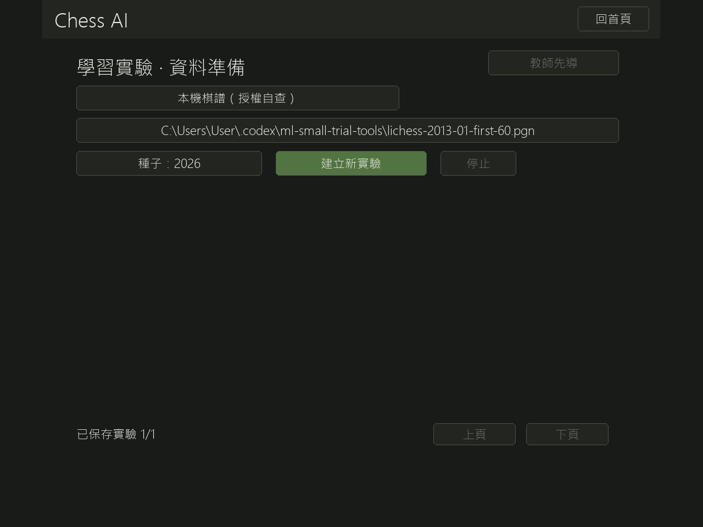
123- 1 選來源
- 2 本機路徑
- 3 另建資料
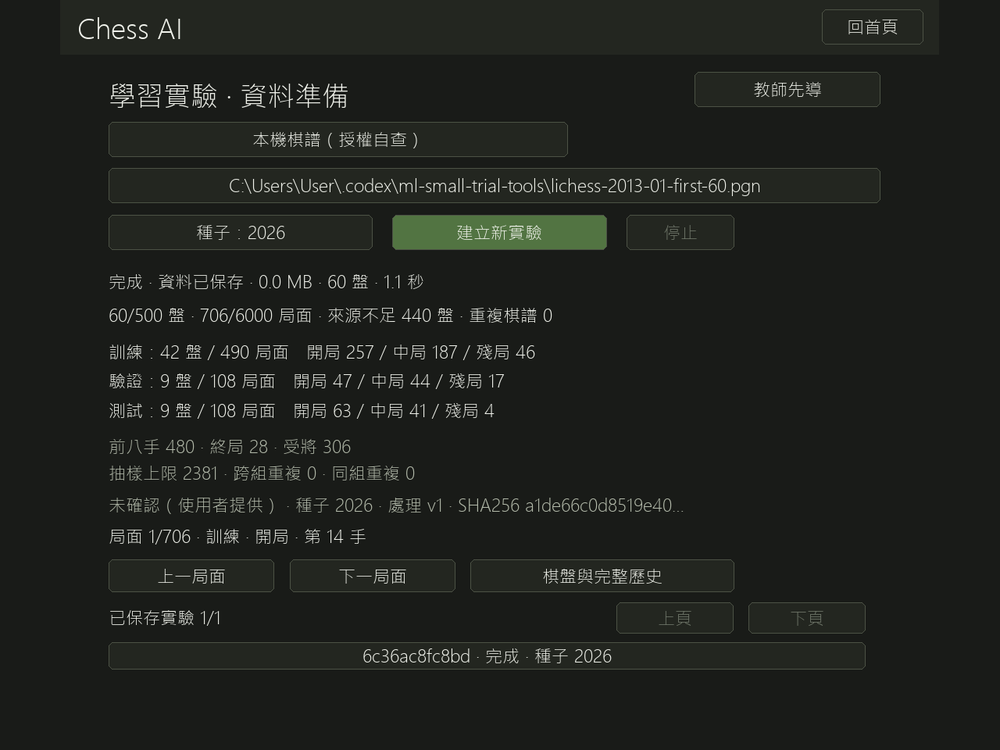
12- 1 教師先導
- 2 局面與完整歷史
進入「教師先導」，輸入本機 Stockfish 19 執行檔。只從訓練組固定最多 100 局面量測 50k 與 200k 節點；先看耗時、有效差值與篩除量，再選一個預算。教師執行檔雜湊、版本、Threads、Hash、節點及評分政策一起凍結，改條件另建先導。本次選 50k 只為短流程，不替正式研究作品質保證。
目前先導另可設定「同時分析局面數」：新先導預設最多 4 個 Stockfish 程序，依可用 CPU 數調低，每個程序固定 Threads=1。兩種節點預算分開量測整批經過時間；選定預算後，標記沿用相同程序數。改並行數須建立新先導；舊資料仍依原單程序條件讀取與續跑。所有程序共用每次八小時期限，停止會保留已提交局面並清理程序。
先導完成後，兩種預算會並列實測時間與後續標記預估。預估使用相同程序數的整批實測吞吐，扣除可重用先導結果後計算待標記量；仍需分析才會被篩除的局面也算在內。它只估教師標記，不含學習或對戰；舊資料或無有效量測時顯示「無法估計」。重開可沿用保存量測，不必重跑教師。
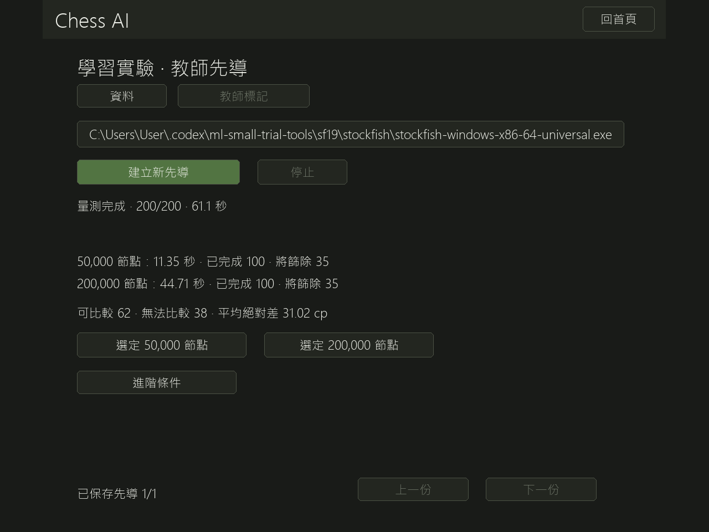
123- 1 選50k節點
- 2 選200k節點
- 3 教師與搜尋條件
選定後「教師標記」→「建立新標記」。訓練、驗證與測試共用凍結條件；僅重用同身份、同預算的先導紀錄。將死、吃子／升變、僅上下界及特殊分數不進入學習，原始輸出仍保存。所有分組完成前禁止用部分標記學習。
可按停止，等待狀態完成保存後關閉。重開同份資料、教師與標記，按「續跑／重試」只補未提交或失敗局面。改教師／篩選條件則建立新先導與標記。資料準備中停止不發布完成快照，需另建資料；它與標記續跑不同。
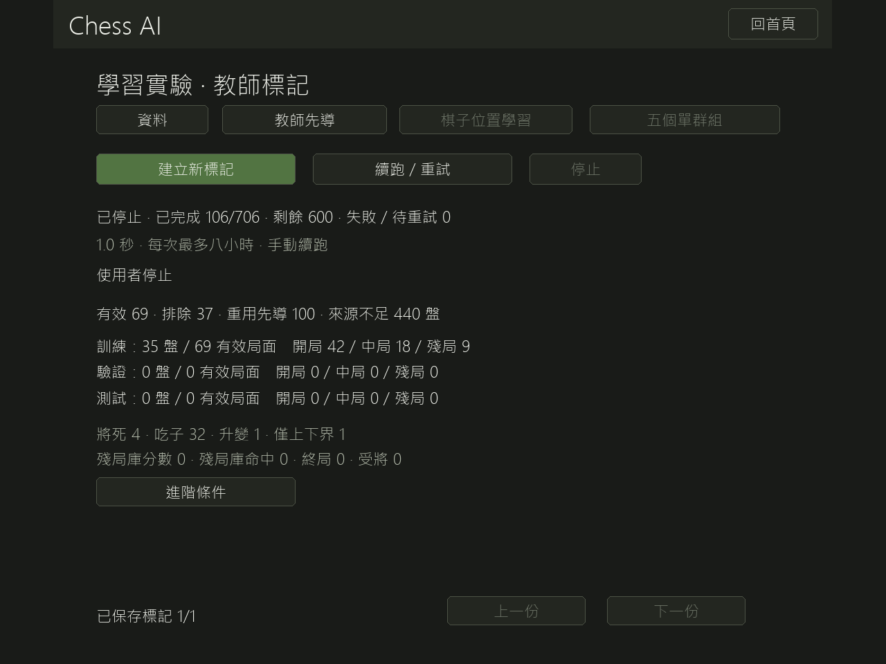
1- 1 只補未提交標記
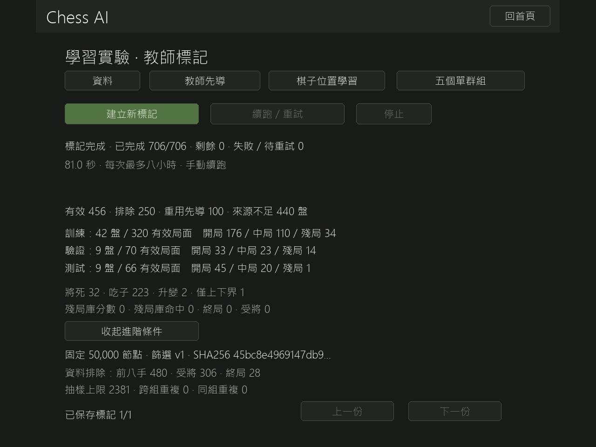
12- 1 五個單群組
- 2 篩選與階段分布
2. 用共用尺度比較五個獨立群組
標記完成後進入「五個單群組」，選棋子位置、兵形、活動力、王安全或協調。每組都是子力加該組，未選群組保持關閉；共 16 個位置項、32 個中局／殘局係數。固定棋子價值 P/N/B/R/Q＝1/3/3/5/9、子力倍率 1 與階段規則。棋子位置是現有 PST 整組倍率，不是每格學一個值。
校準只用訓練組：以固定 stable 評分對教師 cp 計算逐盤等權、無截距的一個正倍率；所有選定群組共用它，不隨切組重估。stable 是參照，帶有自己的偏差，且原設定關閉分階段；它不是純子力，也不保證更強。殘差與奇偶盤子集倍率偏差用來辨識尺度不穩，異常時不作可靠排名；校準正常亦不代表教師或特徵沒有偏差。
採非負擬合，加上偏離原始權重的軟性懲罰；零初始值仍能變正，不設統一百分比上限。弱／中／強三候選依逐盤驗證 MAE 選定，先凍結再對測試評估一次。版本、強度、尺度、容差與同分順序在開始前保存。五組與三候選共用整次八小時，不是每組八小時。
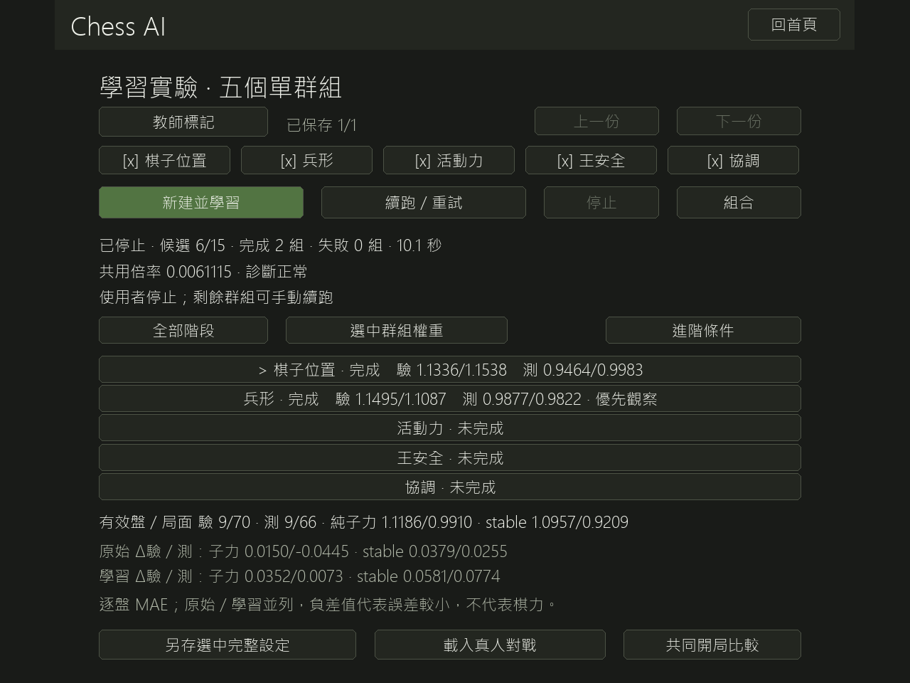
1- 1 只補未完成候選
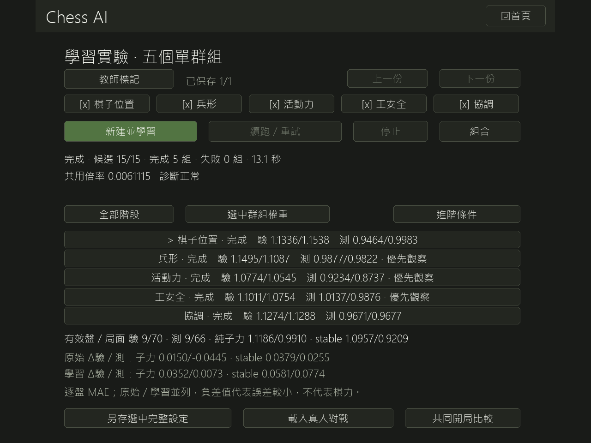
123- 1 切換階段
- 2 查看權重
- 3 完整設定另存
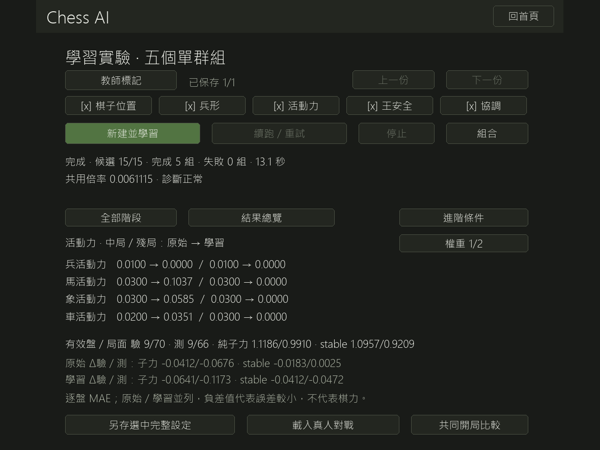
12- 1 完整設定另存
- 2 共同開局比較
MAE 是先算每盤平均絕對誤差、再各盤等權。切換開局／中局／殘局時同時查看盤數與局面數；無資料不是零誤差。相對純子力或 stable 的負差值表示誤差較小，不表示勝率。只有校準正常且驗證、測試都比原始改善才標示「優先觀察」，沒有固定改善百分比門檻，未勝過 stable 也可另存或做組合。
已完成候選及報告重開不再求解或測試。改群組或條件選「新建並學習」。另建實驗仍沿用同一測試資料時，畫面保留已曝光來源；不能宣稱全新未見資料，也不要看完測試再反覆改參數。
3. 活動力＋王安全：直接組合與聯合訓練分開看
五組頁按「組合」。預設活動力＋王安全，可明確勾選其他群組；先看實際開關、權重與候選數，按新建才套用。來源必須使用相容資料、校準與階段規則，不能默默混合不同尺度。王安全單組沒有勝出也保留這項預定搭配。
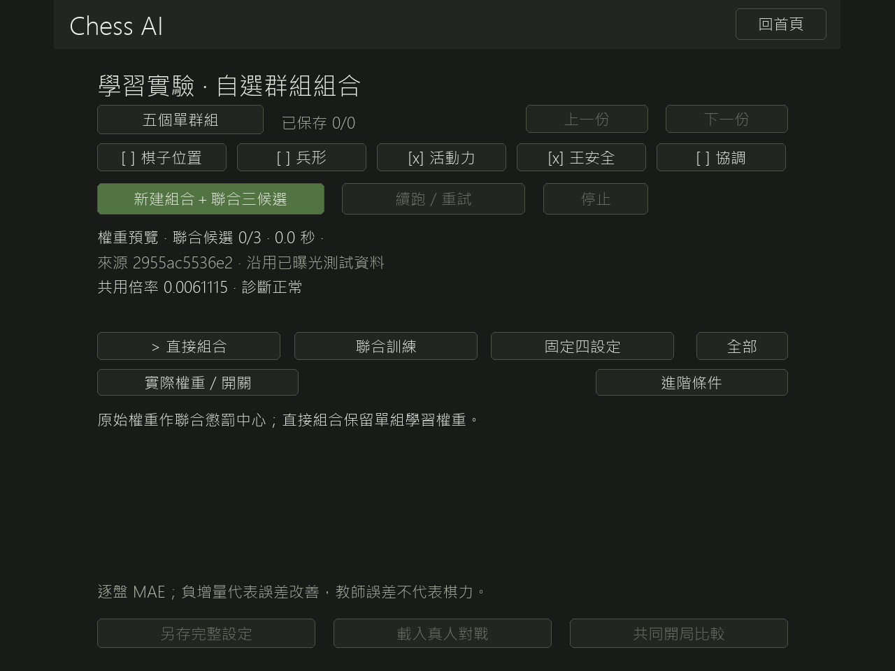
12- 1 所選組合＋聯合三候選
- 2 實際權重與開關
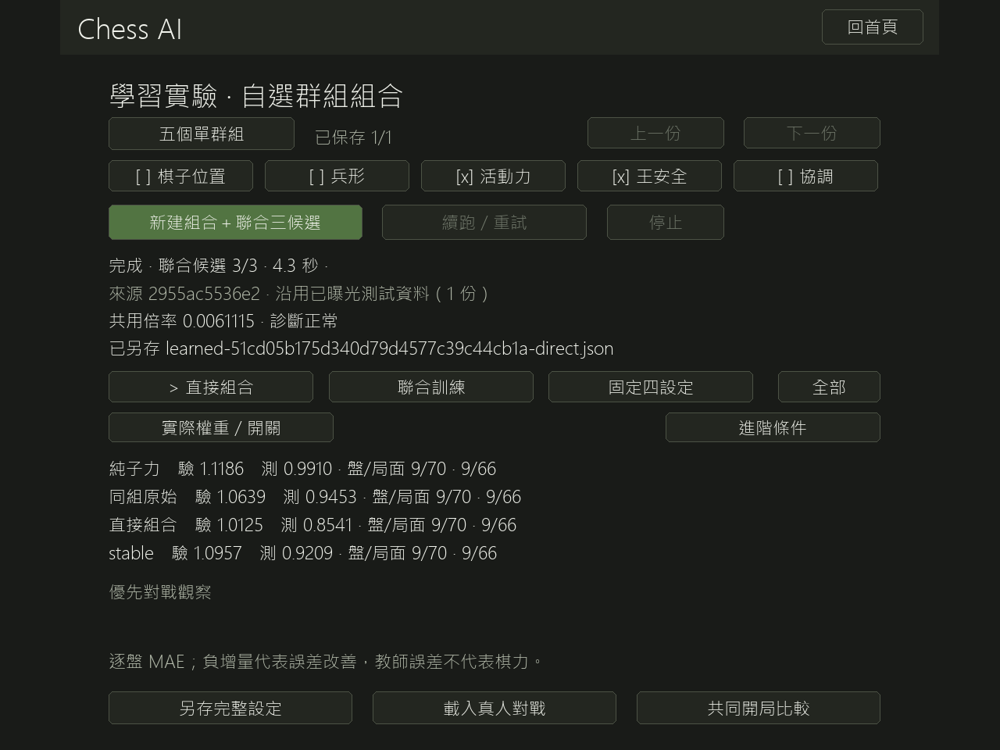
12- 1 實際權重與開關
- 2 送入共同開局比較
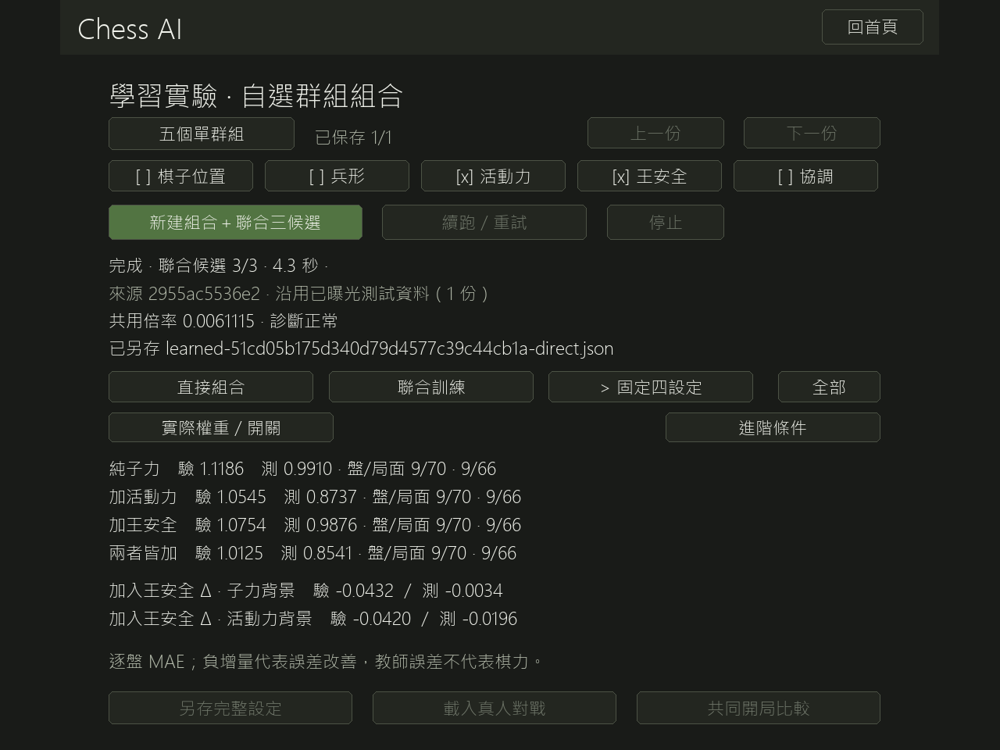
12- 1 固定權重四設定
- 2 切換階段
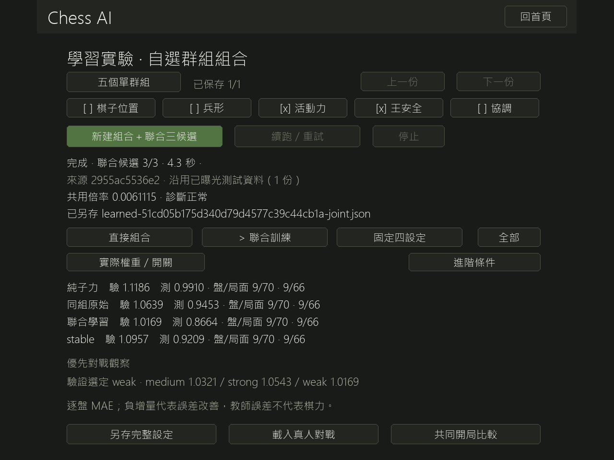
12- 1 實際權重與開關
- 2 送入共同開局比較
「固定四設定」使用純子力、加活動力、加王安全、兩者皆加，在同一資料與權重下只切開關。兩種背景加入王安全的誤差增量可不同，因絕對誤差與其他分數背景有關；這不表示加法評分器新增交互特徵。不要把四份分別重訓的結果當這個固定權重對照。
「直接組合」保留各來源單組已學係數；「聯合訓練」同時重擬合所選群組，懲罰中心仍是原始值，沿用來源校準、三強度、驗證挑選、測試凍結與整次八小時政策。兩者各有身份與報告、都能另存完整設定，切換後確認再送對戰。
4. 另存、共同開局對戰、停止與回放
單組或直接／聯合結果按「共同開局比較」。可選原始、學習角色，純子力為主基準，額外 stable 是參考；角色各自保留設定身份。按完整設定逐頁檢查後凍結預覽，來源實驗、教師誤差與對戰條件隨計畫保存。
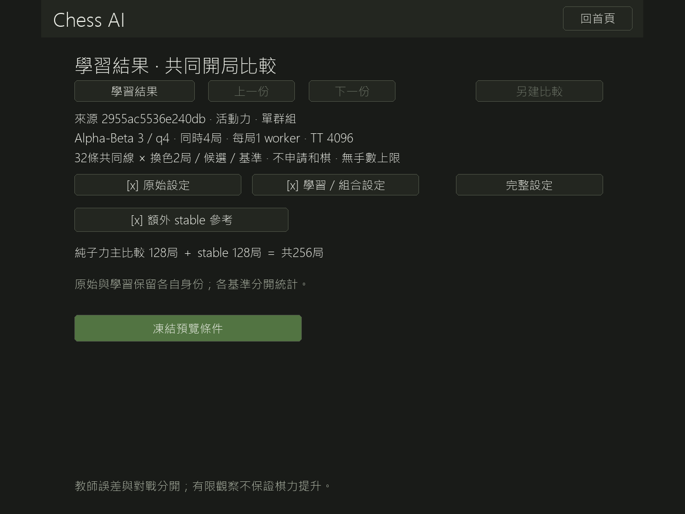
12- 1 額外stable參考
- 2 凍結預覽
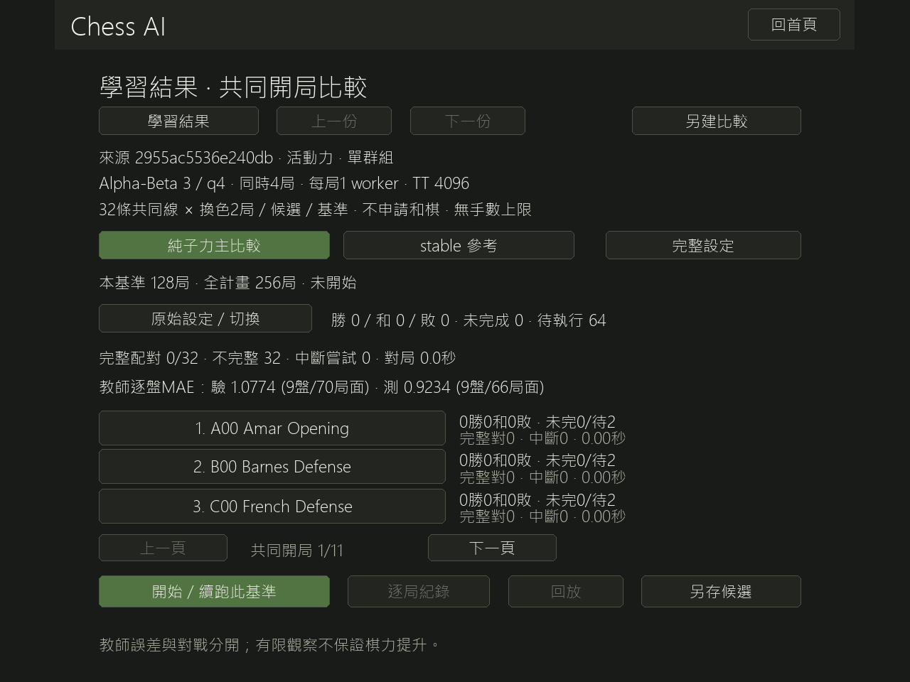
12- 1 完整設定
- 2 開始或續跑此基準
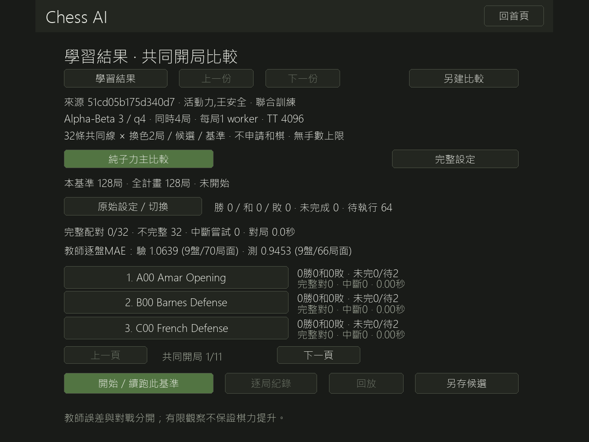
12- 1 完整設定
- 2 開始或續跑此基準
每候選對每個基準用相同 32 條開局線，交換黑白各一盤＝64 局。兩個角色對純子力是 128 局，另選 stable 再加 128，共 256；各基準統計分開。固定 Alpha-Beta 深度 3／q4、同時 4 局、每局 1 worker、TT 4096；不申請和棋、無手數上限。這不是教師節點預算，亦不使用一般對戰的隨機開局選步。比較先重播凍結前綴，之後才由搜尋選步，完整歷史一直保留。
「開始／續跑此基準」後查看逐局手數、回合與輪到方；第四盤在下一頁。「要求4／實際4」是不同對局程序，不能當每局用了4個搜尋worker。需要中斷時按「停止並保存」，等待狀態變為已停止，再關閉。
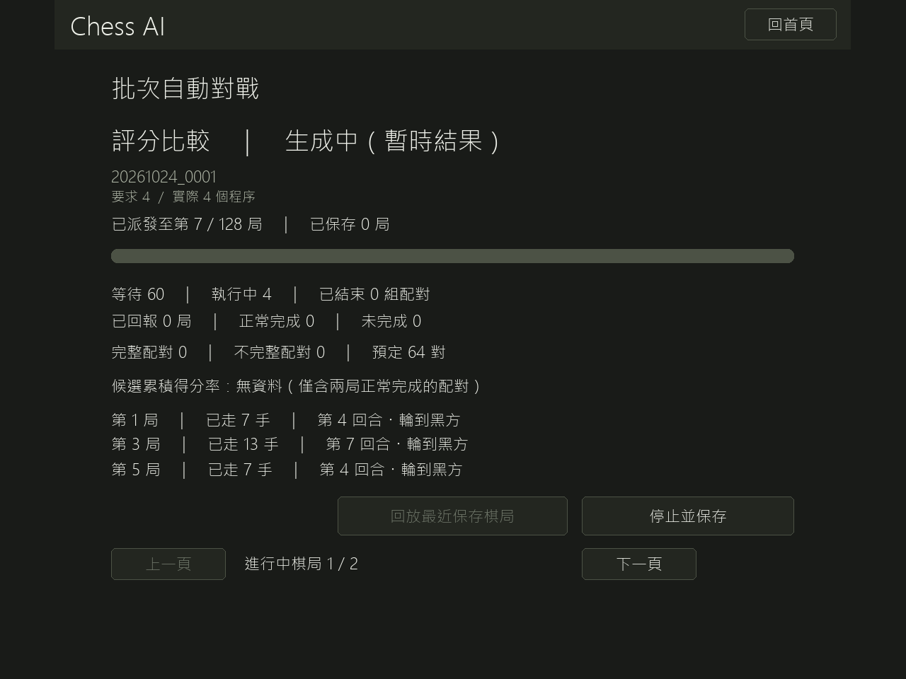
12- 1 第四盤進度在下一頁
- 2 停止並保存
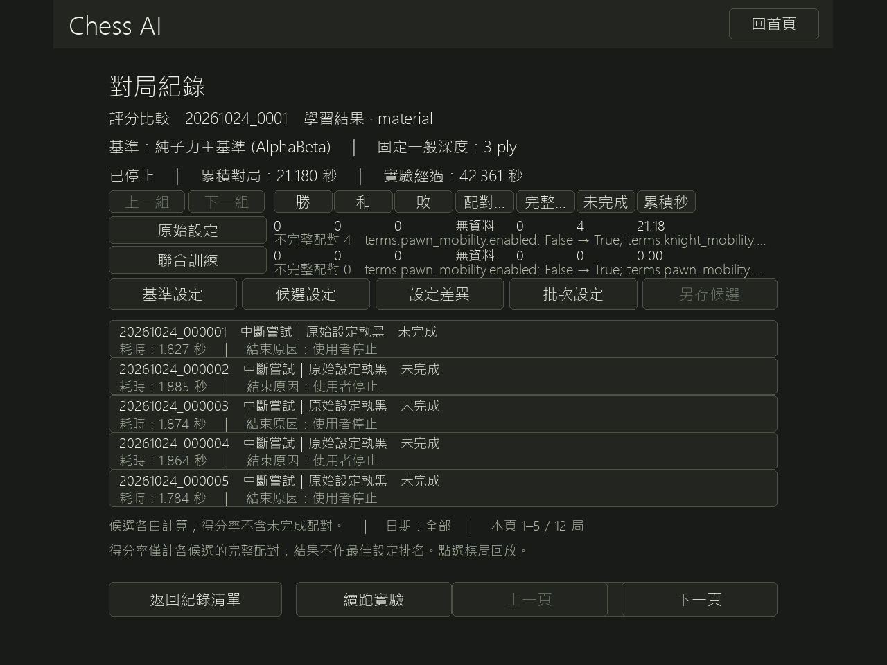
12- 1 由保存紀錄續跑
- 2 學習研究報告
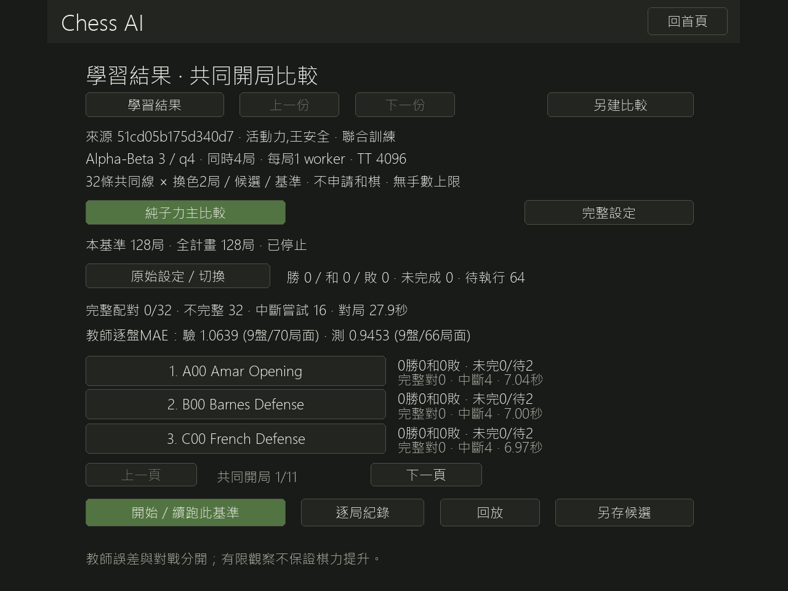
123- 1 逐開局詳情
- 2 逐局紀錄
- 3 回放保存棋譜
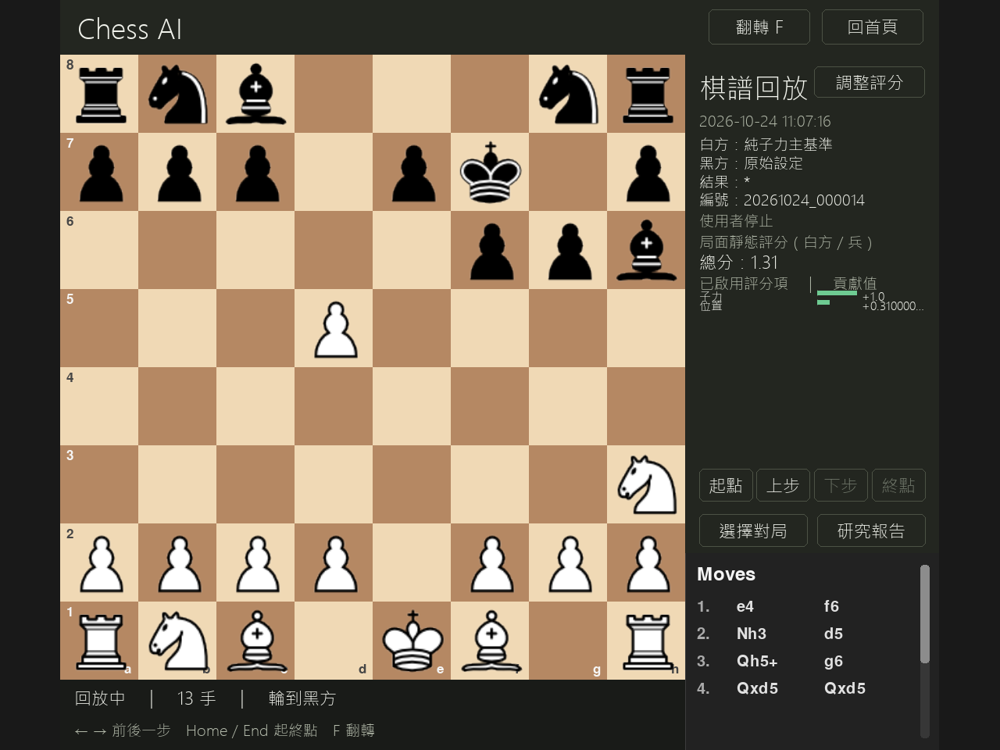
重開「查看紀錄」選原批次，按「續跑實驗」，或在該計畫按續跑此基準。保留原始快照、完成工作與歷史嘗試，不重複計算已完成配對。中斷嘗試仍保留回放，但不算和棋；報告的待執行、未完成、完整配對與中斷嘗試是不同數量。短流程尚無正常完局時，得分率顯示無資料是正確結果。
從逐局紀錄進入「學習研究報告」，可逐開局查看前綴、耗時、配對與中斷，並切換原始／學習、純子力／stable。按回放查看完整歷史與棋盤；另存候選保存完整合法 config，可再用於真人、一般比較或回放。真人／一般批次開局庫可開關並調上限（預設最多12手），首次離庫後不再回庫；它和研究中凍結32條線的用途不同。
5. 正式研究如何分次執行
- 官方月份固定種子建立500盤（350/75/75），每盤最多12局面；核對實際量與來源。若來源不足，不把60盤驗收資料當500盤。
- 先導比較50k/200k後自行選預算，完成所有標記。每次最多八小時，停止後檢視原因與結果，再手動續跑未完成；改條件另建，勿自動連續重啟。
- 在同一完整標記上完成五個獨立群組；所有組及三強度共用一次校準與整次八小時。保留原始、學習與基準誤差，無改善也保存。
- 完成預定活動力＋王安全固定四設定、直接組合與聯合訓練，再依明確假設選其他組合。記錄測試資料已曝光，不用測試選參數。
- 凍結候選，以深度3/q4、4×1、TT4096做每候選每基準64局；額外stable增加工作量且獨立報告。可停止、重開續跑，直到完整配對足夠，再看逐開局敏感性、總結果與成本。
- 將教師誤差與對戰觀察並列，判斷繼續投入、調整假設或證據不足；不要以有限勝率保證棋力。深度5、有償算力、自動接力八小時與多實驗管理不在本輪。
6. 本次已執行與尚未執行
| 項目 | 真實短流程證據 | 適用限制 |
|---|---|---|
| 來源與標記 | 重新建立真實60盤、706局面；SF19先導200筆，選50k；106筆後停止重開，完成706筆。有效456、排除250；訓練320/42盤、驗證70/9、測試66/9。 | 不足440盤；測試殘局僅1局面/1盤。來源與同一測試內容曾在前票使用，不能宣稱全新未見研究。 |
| 五組與組合 | 2組/6候選停止重開，完成5組/15候選，原8個提交與校準位元組不變。活動力＋王安全direct/joint與固定四設定完成，完整設定可另存。 | 共用倍率約0.006111529，依stable參照與資料分布；實驗順利不表示泛化或棋力改善。 |
| 對戰與回放 | single/direct/joint均由UI開始正式32線條件，觀察離庫後實際深度三走棋；joint停止關閉重開續跑，快照與既有棋譜不變，回放最終FEN一致。 | 只作短流程，中斷嘗試不算和棋；未完成任何完整64局研究，不能計作勝率證據。 |
| 正式未執行 | 完整500盤標記、所有單組/預定組合的正式研究、每候選每基準64局及八小時實際長跑。 | 交付後由使用者按上述政策分次執行；可得到未改善或證據不足的結論。 |
可攜式摘要見 本次驗收摘要。完整來源及操作原始證據保留於本地M11工作票指向的外部目錄；JSON包含原始快照身份與檔案雜湊。先前完整月份已抽樣500盤，不等於500盤標記、學習或64局研究已完成。
來源參考（需連線）：Lichess 棋譜資料庫（CC0）、Stockfish 官方下載（GPL-3.0）。軟體、棋譜與原始標記沒有打包進教學圖片目錄；請自行保存可追溯來源。